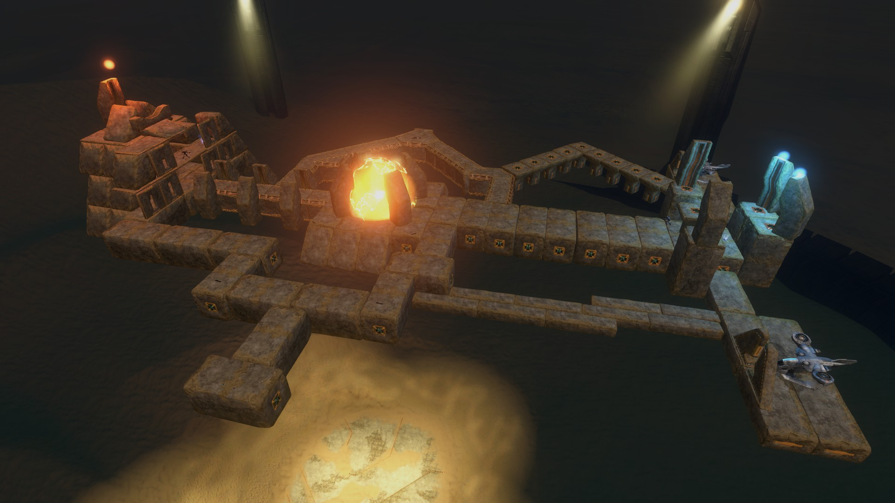
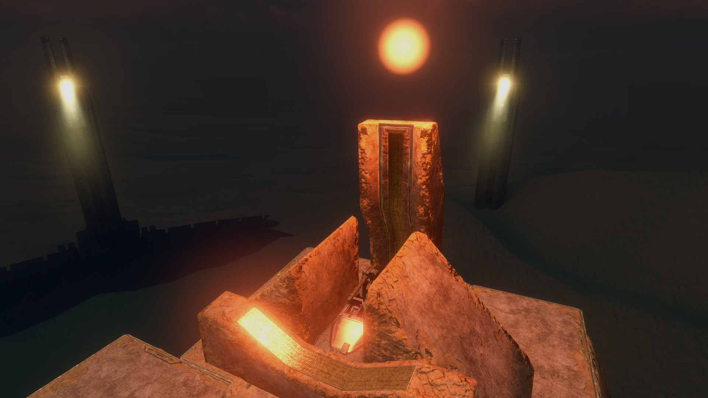
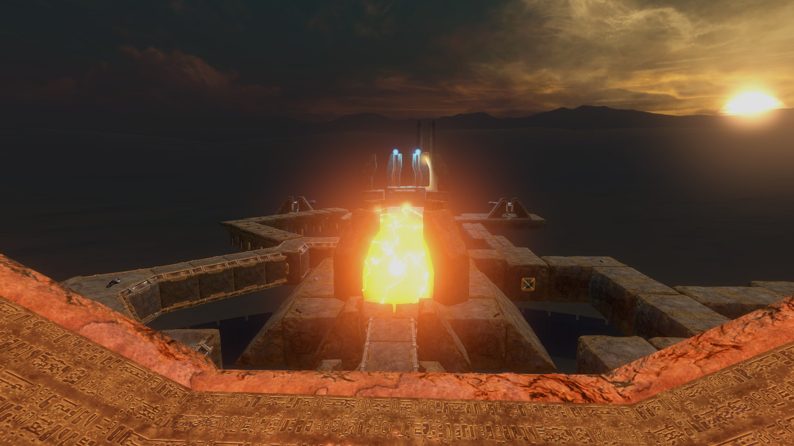
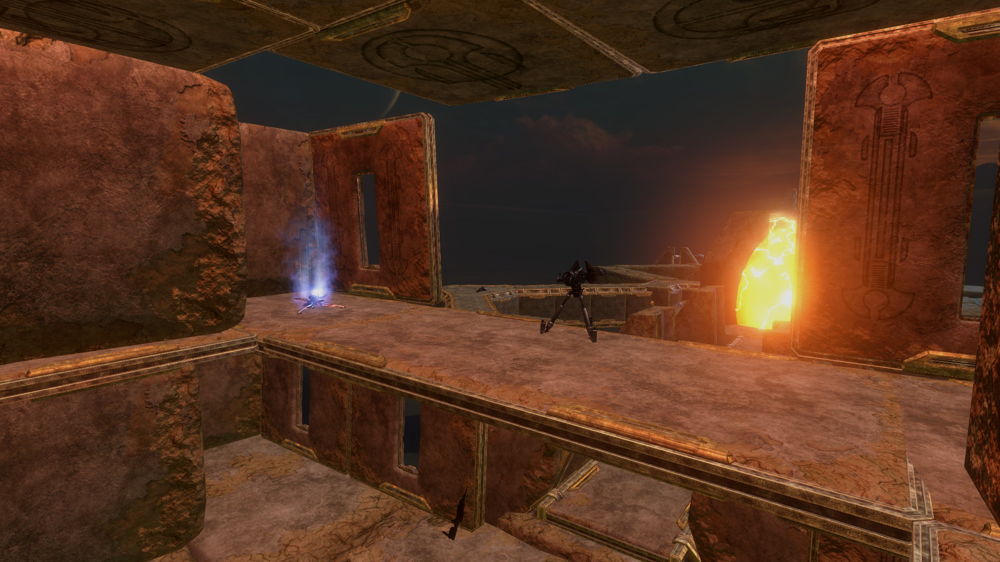
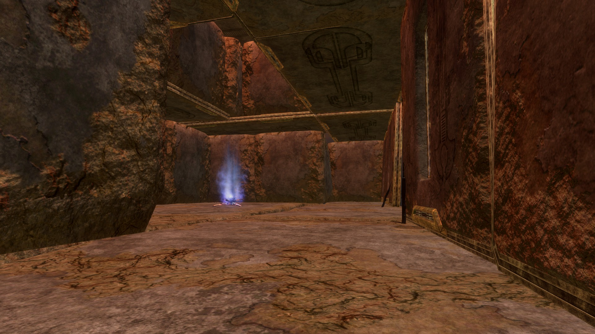
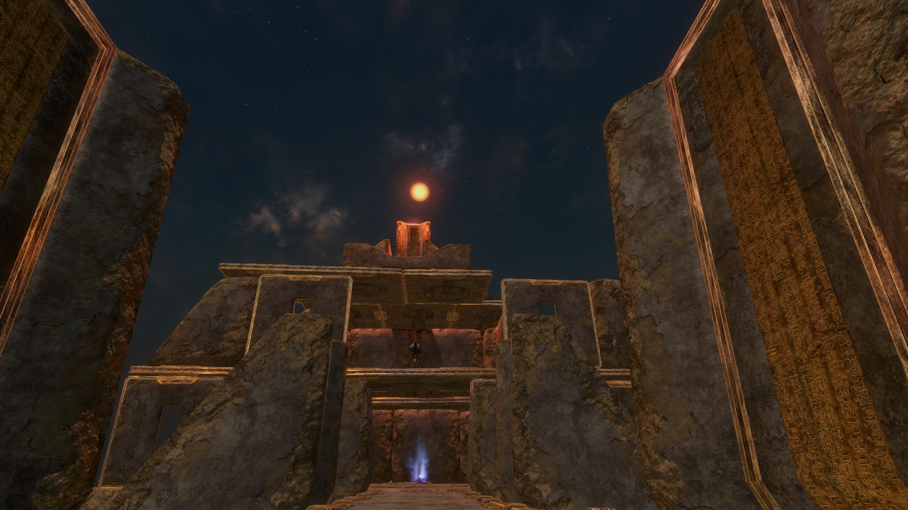
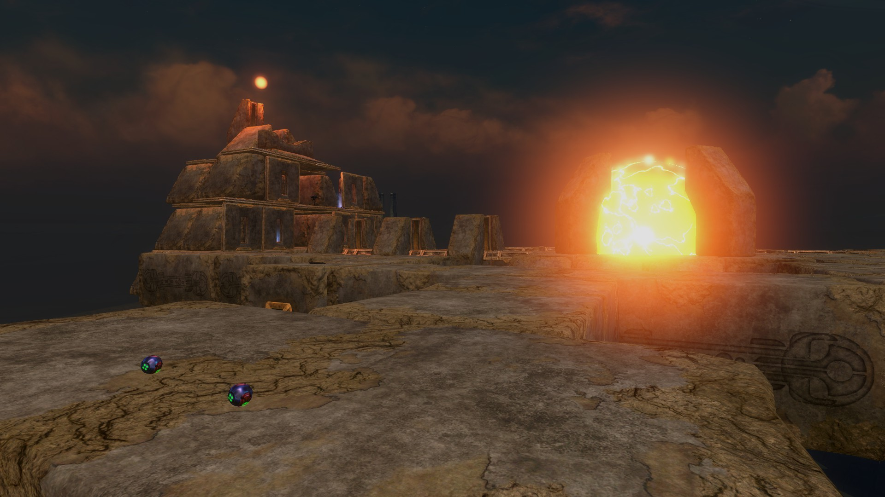
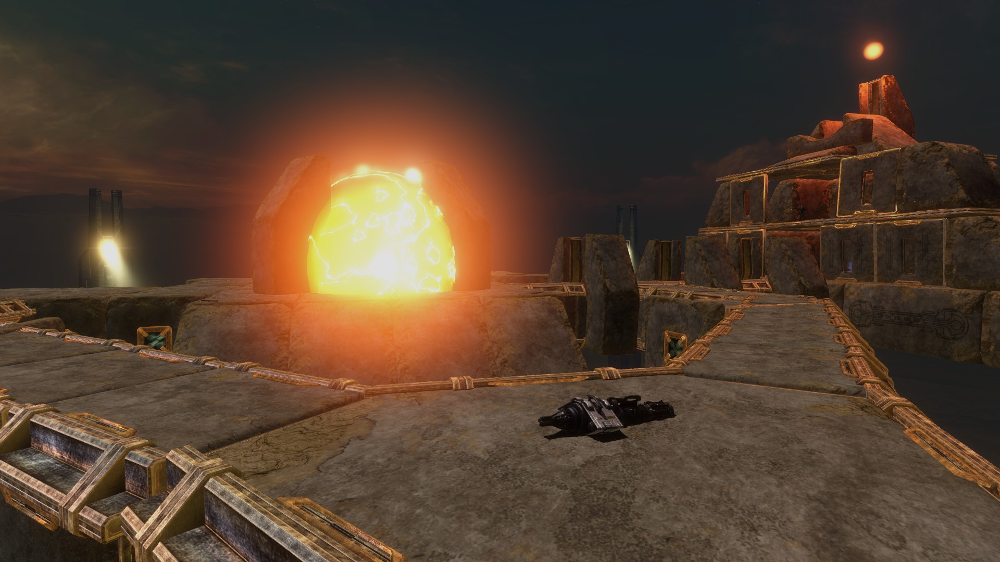
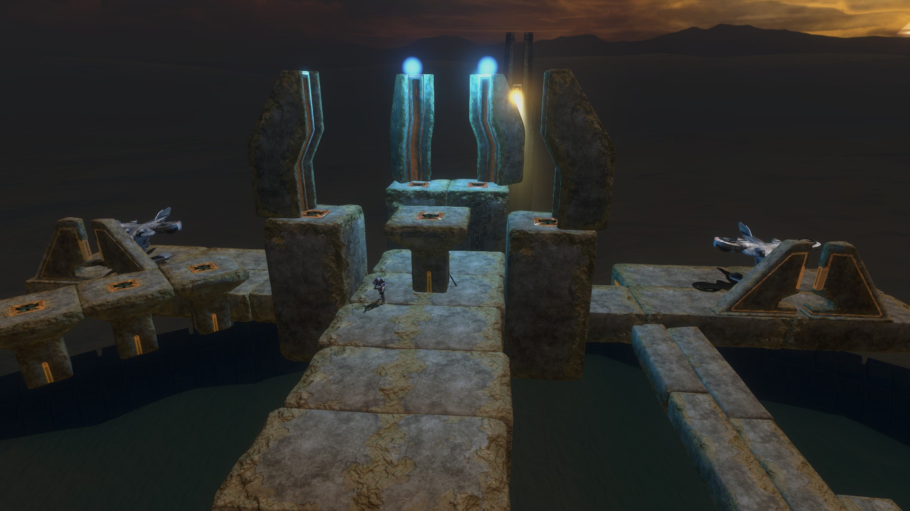
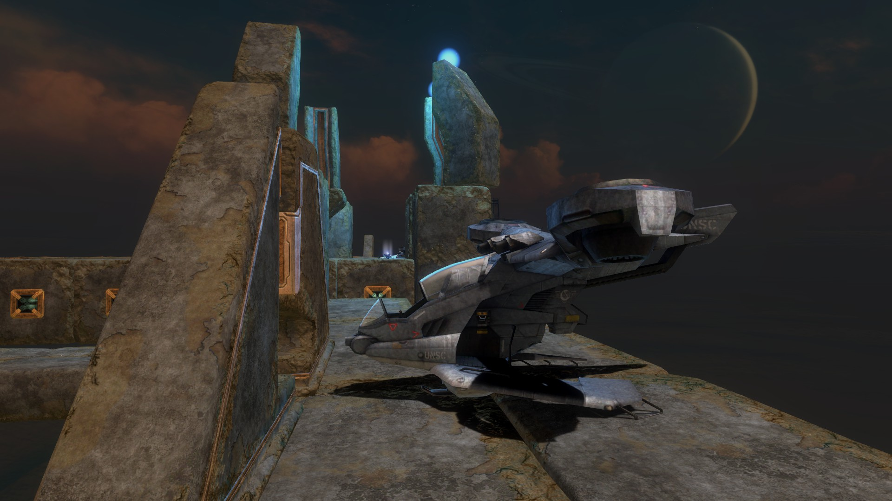

Reactor
-

An overview of the map with a "kill ball" as its central setpiece to make the most direct route from one side to the other more hazardous. -

The main unique element of this map is the gauss turret I built by trapping a warthog in a cage of blocks that also restricted its firing cone to only allow it to shoot at aerial vehicles. -

The rest of the map as viewed from the gauss turret's position. -

The small second floor of the red structure that is both passage to the third floor and a small vantage point over two of the incoming footpaths. -

The bottom floor of the red structure as seen from the side entrance. -

The red structure as seen from the main entrance. -

A view of the red structure from the side path that does not connect to the main entrance. This is also the main source of sticky grenades on the map. -

The other alternate path towards the red structure. The missiles are placed closer to the red structure to allow defenders better access but still allow the blue side the ability to contest them. -

The blue side is more of a staging area than a building. Each of its three major sections connect to one of the footpaths that connect to the red structure. -

The blue side's vehicles have some protection from being destroyed before they are able to be used.